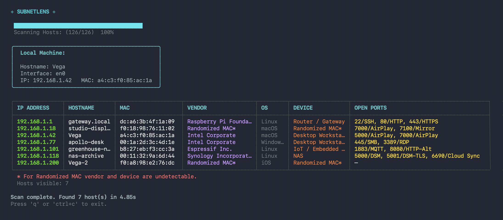

See everything
on your network
SubnetLens is a fast, concurrent network scanner with a TUI and plain-text CLI. Discover live hosts, scan TCP ports, identify vendors, resolve hostnames, and get OS hints in seconds. Open Source. One binary. No account required.

Editions
SubnetLens Core now. Pro in development.
SubnetLens Core is a complete scanner for day-to-day network inventory. Pro extends it for UDP-heavy environments and continuous monitoring, currently in development, not publicly available yet.
| Feature | SubnetLens Core | SubnetLens Pro |
|---|---|---|
| Core | ||
| Host discovery TCP, ICMP, ARP, and mDNS-assisted | ✓ | ✓ |
| TCP port scanning with configurable ports and concurrency | ✓ | ✓ |
| Hostname, MAC vendor, OS, and device hints | ✓ | ✓ |
| TCP banners and protocol fingerprints | ✓ | ✓ |
| Interactive TUI | ✓ | — |
| Plain terminal output | ✓ | ✓ |
| Pro Edition | ||
| UDP probing SSDP, mDNS, NBNS, SNMP, DNS, NTP | — | ✓ |
| Metadata-based device classification from UDP evidence | — | ✓ |
| Watch mode appearance, change, and disappearance alerts | — | ✓ |
| Webhook delivery for watch alerts | — | ✓ |
| Cross-cycle identity matching evidence fingerprints, grace windows | — | ✓ |
| Planned | ||
| Structured exports JSON, CSV — pipeline and archive use | ✓ | ✓ |
| GUI and network map visual inspection, host history | — | — |
SubnetLens Core
A complete scanner, not a demo.
SubnetLens SubnetLens does what it says. You can run it on any network right now, with no account, no telemetry, and no artificial limits.
- ✓ TCP, ICMP, ARP, and mDNS discovery — finds hosts that ping-only scanners miss
- ✓ Concurrent TCP port scanning — configurable ports, concurrency controls, and sensible defaults
- ✓ Identity resolution — hostname enrichment, MAC vendor lookup, OS detection, device heuristics
- ✓ Protocol fingerprinting — optional TCP banners, HTTP, SSH, and TLS hints
- ✓ TUI for interactive use, plain terminal output for scripting and logs
- ✓ Single statically compiled binary — no runtime, no package manager, no service backend
SubnetLens Pro
Built for continuous monitoring.
The private Pro build extends the SubnetLens Core for UDP-heavy networks and continuous monitoring. Only features that are implemented today are listed as live. Planned items are separate.
Not publicly released yet.
Deeper inspection
Go beyond TCP with full UDP probing and service-level fingerprinting.
- UDP discovery and host probing acrSubnetLens SSDP, mDNS, NBNS, SNMP, DNS, and NTP
- Evidence capture and metadata-driven classification for network appliances and infrastructure services
Watch mode
Run continuously. Get notified when a new device joins or a host goes offline.
- Scheduled re-scans on a configurable interval
- Diff output — only shows what changed
- Webhook delivery for watch alerts, plus terminal watch output
- Grace windows, cooldowns, and identity-aware matching acrSubnetLens scan cycles
GUI
An interactive network map, inspect its ports, track it over time.
- Visual subnet topology
- GUI and network map for visual inspection
- Export to PNG / SVG
Install
Install SubnetLens Core.
No package manager required. Use Go directly, build from source, or download a release binary.
Pre-compiled binaries for Linux, macOS, and Windows.
Philosophy
SubnetLens Core first, Pro when you need it.
SubnetLens Core is not a trial and not a stripped-down version. It does exactly what it says, on any network, without an account.
Pro extends the Core for environments where TCP scanning is not enough: UDP-heavy infrastructure, IoT-dense networks, and long-running monitoring workflows. If OSS does everything you need, use it. There is no pressure to upgrade.
This follows the same model as Grafana, Terraform and other tools that treat open source as a complete product and Pro as an optional extension.